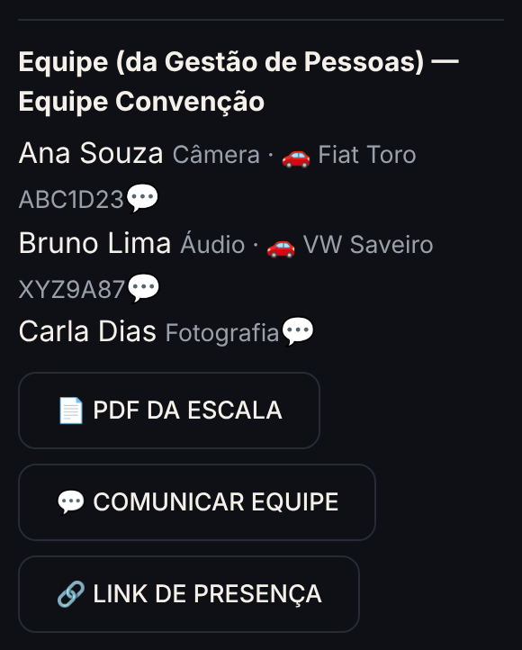

Cada evento é um dossiê completo. A agenda mostra os dias com evento e o painel ao lado resume quantos estão por vir e quanto já foi faturado.
No dossiê aparece a equipe escolhida, com função e veículo de cada um, e três botões:
PDF DA ESCALA lista de quem trabalha, com telefone, e-mail, CPF, veículo e quem confirmou presença.
COMUNICAR EQUIPE mensagem pronta para cada um no WhatsApp, e-mail para todos ou lista para o grupo.
LINK DE PRESENÇA cada colaborador confirma se vai; as respostas aparecem aqui.
Em Veículos, o botão ⇩ PUXAR DA EQUIPE traz placa, modelo e motorista dos membros, para liberar a entrada no local.

O cadastro de clientes (nome, CNPJ, telefone, e-mail, endereço) e o link para o cliente se cadastrar ficam no fim da página Eventos. No evento, escolha o cliente da lista — sem erro de digitação.
Contratos, notas fiscais e comprovantes ficam numa pasta privada: só a sua conta abre, e cada abertura gera um link que vale 10 minutos.